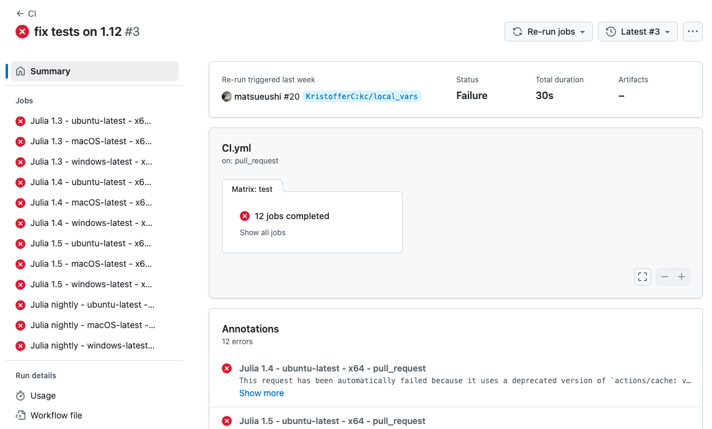
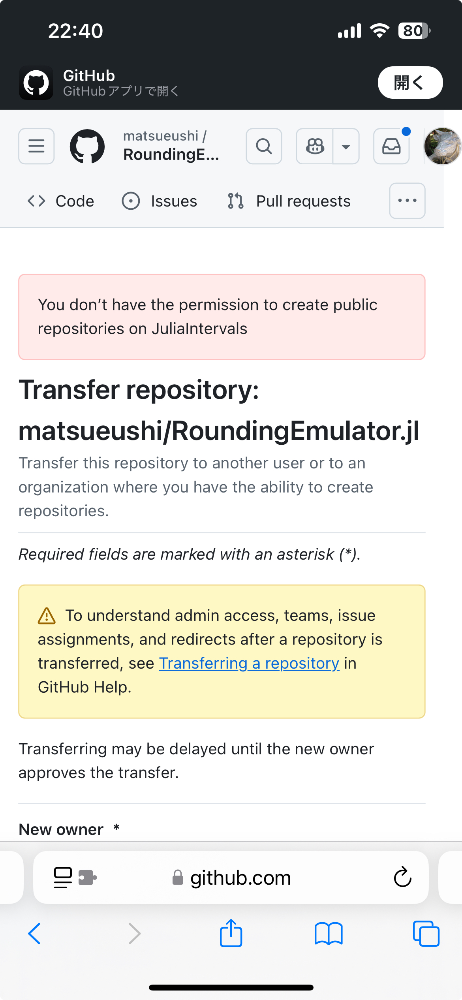

5 年ほど前に、Julia で浮動小数点数の上付き丸め、下付き丸めをエミュレーションする記事 デフォルトの丸めモードで上付き丸め、下付き丸めをエミュレートする (Julia) を書きました。
そこで RoundingEmulator.jl という Julia パッケージを作成し、精度保証計算を行う Julia パッケージ IntervalArithmetic.jl に プルリクエスト Another rounding option by matsueushi · Pull Request #370 · JuliaIntervals/IntervalArithmetic.jl を送って丸めモードを指定した計算に使われるようになりました。
月日が経つのは早いもので……
放置しているレポジトリにプルリクエストが来た
最近ではどちらかというと Python や Rust を使う機会が多くなり、Julia から遠ざかっていてこのパッケージのメンテナンスは行っておらず事実上放置状態となっておりました。
頻繁に更新が必要な類のパッケージではないのでまあ良いだろうと思いそのまま放っておいたのですが、とある日、プルリクエストが来ていることに気づきました。
fix tests on 1.12 by KristofferC · Pull Request #20 · matsueushi/RoundingEmulator.jl
テストが Julia の最新版で壊れていたので直してくださったのですが、CI を更新していなかったため、GitHub Action のバージョンが古すぎて CI が全て落ちるため動作が確認できないという結果に。
fix tests on 1.12 · matsueushi/RoundingEmulator.jl@726d314

まずはプルリクエストに対処する
GitHub Actions が古くなっていることが原因のようだったので、ひとまず、生成 AI の力を借りて修正し、なんとかテストが通るようになりました。
Update workflow by matsueushi · Pull Request #21 · matsueushi/RoundingEmulator.jl
Update ci by matsueushi · Pull Request #23 · matsueushi/RoundingEmulator.jl
master ブランチにマージすると、Documenter.jl によるドキュメントのデプロイの Action が落ちているという結果に。 多分もう少し頑張れば直るはずですが、一旦諦めて、頂いたプルリクエストをマージしました。
維持するのが難しいレポジトリをどうするか
冒頭述べた通り、最近は Julia を使っていないため、このままにすると将来同じことが起きる可能性があります。IntervalArithmetic.jl の機能は RoundingEmulator.jl に依存しているため、Julia のバージョンアップなどで動かなくなった時には Issue や Pull Request が来そうです。
そこで、IntervalArithmeic.jl を管理する Github Organization の JuliaIntervals にレポジトリを移譲できないか、問い合わせてみることに。
Hello
IntervalArithmetic.jlmaintainers,
I am the original author of
RoundingEmulator.jl, which is a dependency ofIntervalArithmetic.jl. Since I am no longer actively using Julia, I would like to transfer the maintenance ofRoundingEmulator.jlto the JuliaIntervals organization. Transferring it will ensure better long-term support.
- If the JuliaIntervals maintainers agree, I will transfer the repository to
JuliaIntervals.- After the transfer, I will update the repository URL in the General registry.
- I will update the README and LICENSE files accordingly to reflect the new ownership.
- I can provide support during the transition period if needed.
Would JuliaIntervals be interested in taking over maintenance of this package? Please let me know your thoughts. I appreciate your time and consideration!
Best regards, @matsueushi
数日経つと返信がありました。
Dear @matsueushi, we discussed this in our IntervalArithmetic meeting and everyone agrees with your proposal. Let me know if you need any help with the process 🙂 !
とあり、移管先として受け入れていただけることになりました！
レポジトリの移譲手続きを行う
許可を頂いたところで、早速レポジトリの移譲手続きを行っていきます。
結論から言うと、移譲先の Organization に加えて頂いて、移譲先にレポジトリを作る権限を頂くのが一番早いです。今回はそのような形で移譲手続きをしました。
まず、何もしていない状態で、GitHub の Settings -> Collaborators から移譲手続きをすると権限がないと言われて移譲できません。

リポジトリを移譲する - GitHub Docs を読むと、
自分が所有しているリポジトリを組織に移譲するには、対象の組織のリポジトリを作成する権限が必要です。
とあります。 最初、自分のレポジトリの Collaboratior に相手方のアカウントを追加してレポジトリの移譲をお願いしたところ、どうやらパーソナルアカウントだと Collaborator には Push 権限しかつかず、Admin 権限はつけられないことが発覚してこの方法は失敗に終わりました。
結局、Organization へのインビテーションを送っていただき、早速 OK して、再度レポジトリの転送を試みると、今度はうまくいきました。
（スクリーンショットを撮ったのですが消えてしまいました）
忘れずに、Julia のパッケージ登録用レポジトリ General にも PR を送っておきます。
あとは、README などの修正が必要ですが、移譲手続きについてはこれで完了したかと思います。
JuliaIntervals の皆様、ありがとうございました！